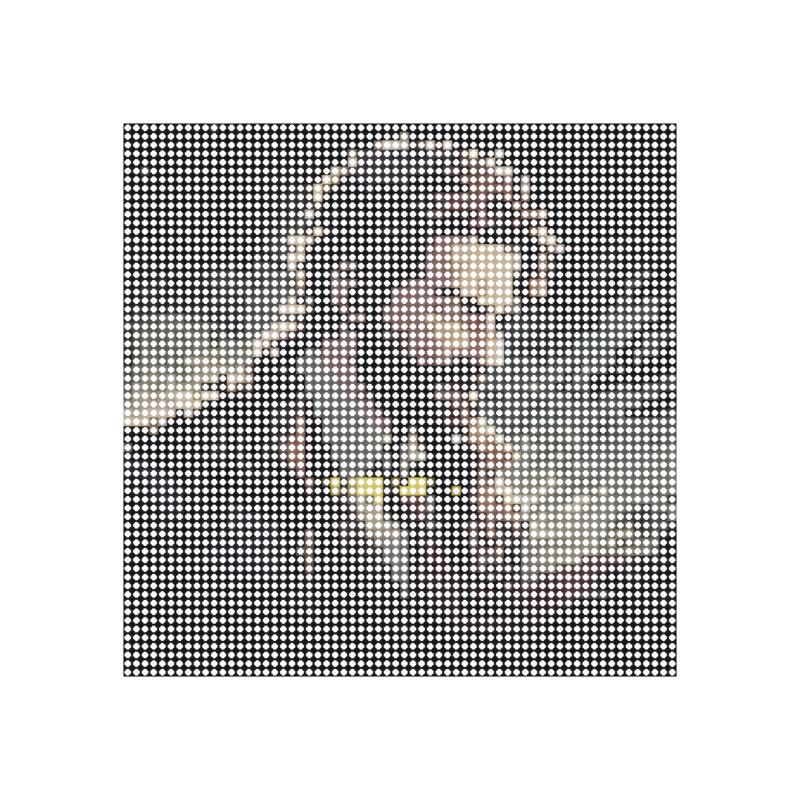

Stack, blend and mask textures the way you do in Photoshop — fully non-destructive, with 8 PBR channels and one-click engine bake. No node spaghetti, ever.
Blender 4.2 LTS & 5.x · EEVEE Next + Cycles · One-time purchase, free updates
assets/images/screenshots/hero.png
The Problem
Tired of spaghetti node trees just to blend two textures?
Switching between Blender and Substance for every texture change?
Spending more time on nodes than on actual painting?
TLM brings the layer workflow you already know — right inside Blender.
How It Works
If you've used Photoshop layers, you already know TLM. Everything else on this page is just more depth on these three steps.
Paint, fill or procedural layers, stacked like Photoshop — reorder, set opacity, pick a blend mode. Nothing is baked in; change any layer anytime.
Point a layer at Base Color, Roughness, Metallic, Normal, Bump, Emission, Transmission or Alpha — one layer can feed several at once. That's your PBR material, built layer by layer.
Paint a mask, or let a smart mask read the geometry — so a layer lands only on edges, in cracks, or wherever you want. Tweak the mask once, the whole look updates live.
No node tree to wire — and you can eject the whole stack to real Blender nodes anytime.
Layer System
Hue/Saturation, Brightness/Contrast, Levels, Color Balance and Gradient Map. Adjust everything below without touching a single pixel — and route the adjustment to any PBR channel (Roughness, Metallic, Emission…), not just Base Color. Use it for: warming a whole stack, knocking back an over-bright preset, or grading only the roughness.
See the Adjustment layer →Set a base color, roughness, metallic value — change them anytime. No painting required, fully parametric. Perfect for base materials and color foundations. Use it for: the bottom “primer” layer almost every material starts from.
See the Fill layer →Group related layers together. Collapse, reorder, and control group opacity — just like Photoshop. Nest groups inside groups for complex material stacks. Use it for: bundling a “rust kit” (color + roughness + bump) and fading it all in with one opacity slider.
See the Group layer →The familiar paintable layer. Each layer gets its own image texture at your chosen resolution (512 to 4096). Full alpha support, per-layer blend modes, and live viewport preview. Use it for: logos, decals, hand-painted dirt — anything that has to sit in a specific UV spot.
See the Paint layer →Noise, Voronoi, Wave, Marble, Musgrave, Gradient, Checker, Brick, Hex Grid, Magic, Stripes, White Noise, Gabor, Dots, Ridged, Cracks — plus Wood, Tiles, Weave, Truchet, Caustics, Scratches and Scatter. Fully parametric: scale, detail, distortion, dual / multi-stop colour ramp, 3D offset, vector distortion, and coordinate transforms (polar, spherical, swirl, cylindrical). Use it for: infinite-resolution surfaces with zero UVs and zero texture memory.
See the Procedural layer →Reuse any layer's pattern as the source for another layer — with its own blend mode, opacity, mask and PBR channel routing. Build a single wear mask once, drive base color, metallic, roughness and bump from it independently. Substance-grade smart-material workflow without baking. Use it for: one chip mask that simultaneously exposes bare metal, raises roughness and adds bump — edit the source once, everything follows.
See the Reference layer →Compositing
19 blend modes with per-layer, keyframeable opacity — Multiply grime into the crevices, Screen a glow, Overlay detail without washing out the colour beneath. Then route any layer to any channel, with its own blend math per channel.
When a layer outputs to Alpha, the blend dropdown swaps to 41 math operations — so you can combine cutout masks the way Substance Designer does: multiply two masks to intersect them, take the smooth minimum for a soft union, or threshold with greater-than. Complex cutouts, no node tree. The ones you'll actually reach for:
Per-Channel Branching
Per-channel blend overrides let a single layer Multiply the base color while staying Mix on roughness — the way Substance Designer branches mask channels, native in Blender.
Multiply — rust stains paint & primer below.Mix — rust is dielectric, drops to 0.Mix — rust is rough, raises to 0.9.Mix — rust is raised, +0.025 distance.Mix — cool steel grey on chip edges.Mix — raises to 1 (bare metal).Subtract — fresh metal smoother than weathered paint.+ Cumulative routing — a single Fill layer drives Base Color, Metallic and Roughness at the same time. One decision, three channels.
PBR Output
Every layer can independently drive Base Color, Roughness, Metallic, Normal, Bump, Emission, Transmission and Alpha — with cumulative routing: one Fill can paint base color, metallic and roughness at the same time.
Paint or fill the diffuse color for each layer independently.
Per-layer roughness with slider, image, or procedural fac.
Toggle metallic per layer, smooth 0-to-1 control.
Per-layer normal maps with strength, tile scale and rotation. True vector blending across multiple layers — not naive RGB mix.
Generate displacement from any layer's texture or procedural with adjustable strength and distance.
Glow color and strength — with selective emission (gate the glow to a noise / cell / image sub-region).
Per-layer glass / refraction weight for crystals, frosted glass and translucent inserts.
Surface cutout with Cycles-correct transparency. Auto-detects when to enable Hashed alpha in Eevee.
assets/images/screenshots/pbr-channels.png
Smart Masking
A mask is a 0–1 factor that decides where a layer shows. In TLM every layer — and every PBR channel — can carry one, built from a pipeline you control end to end. Pick a source, optionally combine a second, refine the falloff, and it gates the layer. No nodes.
What the mask reads from — a painted image, the mesh geometry, the view / light angle, or a procedural pattern.
Optional slot B, blended with A: Multiply, Min, Max, Add, Subtract, Screen or Difference — each slot independently invertible.
Contrast, Levels (in / gamma / out), Softness and Blur — shape the edge exactly like Photoshop curves.
The final factor × the layer's opacity decides precisely where the layer contributes.
Combine a second source (Multiply, Min, Max, Subtract… each invertible), then refine with Contrast, Levels, Softness & Blur — the whole chain in step 2–3 above.
Two ways to apply a mask, on top of the sources above: Layer Masks gate a single layer (white reveals, black conceals); Clipping Masks clip a layer to the one below. Plus image projection — Flat, Box (triplanar), Sphere & Tube.
assets/images/screenshots/smart-masks.png
Smart Materials
Reference Layers give you Substance-grade smart-material authoring — without baking, without round-trips.
A Procedural Voronoi with distance-to-edge becomes your chip mask. One layer, one decision.
Reference layers point to the chip pattern: one drives Steel (metallic 1, smoother), another drives Primer (warmer, rougher).
Change chip density once — every dependent channel updates live. No node spaghetti. No baking.
Procedural Library
Noise, Voronoi, Marble, Wave, Gabor, Cracks and more — fully parametric, no UVs, infinite resolution. Swap the type or dial any value and the viewport updates live.
Bring Your Own Image
Drop in a photo, a logo or your own artwork — an image layer plus a couple of procedural layers on top turn it into something new. Two ready-made examples ship in the pack:

Pixelate any image into an emissive LED dot-matrix wall. Swap the source image and instantly see it rendered as glowing LEDs — signage, billboards, retro displays.
Lay a view-dependent rainbow foil over your art — watch the bands scroll and shift hue as the card turns, just like a real holo card. Five switchable foil patterns.
One-Click Export
Preset Library
Thirteen production-ready preset stacks ship in the pack — photoreal PBR, stylised NPR, image-driven effects and emissive sci-fi. Each one a documented look-dev study, not a generic procedural. A taste below:
NdotL shadow bands, rim light & integrated outline — no extra modifiers
Cast bronze with green patina pooling in cavities, polished edges
Black marble with swirling cosmic veins in violet & gold
Your image + a view-dependent rainbow foil — five switchable patterns
Wet black surface with petrol rainbow swirls, Fresnel-masked
Roiling emissive plasma — a molten ball of energy
+ per-channel blend overrides, cumulative routing, hot-update sliders, compound dual-masks, selective emission, clipping masks, solo mode, group layers, convert-to-editable-nodes and .tlm preset I/O.
Pricing
One-time purchase. No subscription. No account required.
FAQ
Which Blender versions are supported?
Built for Blender 5.0 and tested down to 4.2 LTS. Renders in both EEVEE Next and Cycles.
Is it a subscription?
No — one-time purchase with free updates. No account, no login, no recurring fee.
Do my materials still work without the addon?
Yes. Convert any layer stack to standard Blender nodes and eject anytime — your .blend keeps working on its own.
Will it slow down my viewport?
Editing a value updates the existing nodes in place instead of rebuilding the whole tree, so dialing sliders stays responsive.
Can I use it for commercial work?
Yes — use it freely in personal and commercial projects.
Does it export to game engines?
One-click PBR bake targets Unreal, Unity and glTF, with custom channel packing for ORM-style maps.
Do I have to UV unwrap?
Procedural and smart-mask layers need no UVs at all. Paint and image layers use your model's existing UVs.
A Photoshop-style workflow for Blender materials — non-destructive, 8 PBR channels, engine bake in one click.
Get TLM on Blender Market — $15One-time purchase · Free updates · Blender 4.2 LTS & 5.x